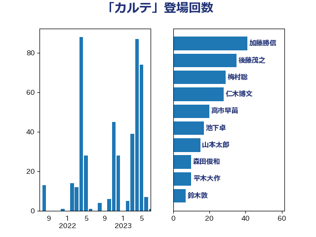

単語「カルテ」

| 加藤勝信 | 自由民主党 | 41 回 |
| 後藤茂之 | 自由民主党 | 35 回 |
| 梅村聡 | 日本維新の会 | 29 回 |
| 仁木博文 | 無所属 | 28 回 |
| 高市早苗 | 自由民主党 | 20 回 |
| 池下卓 | 日本維新の会 | 17 回 |
| 山本太郎 | れいわ新選組 | 15 回 |
| 森田俊和 | 立憲民主党 | 10 回 |
| 平木大作 | 公明党 | 10 回 |
| 鈴木敦 | 国民民主党 | 7 回 |
| 米山隆一 | 立憲民主党 | 7 回 |
| 田村まみ | 国民民主党 | 7 回 |
| 松野明美 | 日本維新の会 | 7 回 |
| 吉田統彦 | 立憲民主党 | 7 回 |
| 一谷勇一郎 | 日本維新の会 | 7 回 |
| 野間健 | 立憲民主党 | 6 回 |
| 川田龍平 | 立憲民主党 | 6 回 |
| 倉林明子 | 日本共産党 | 6 回 |
| 三浦信祐 | 公明党 | 6 回 |
| 阿部知子 | 立憲民主党 | 5 回 |
| 羽生田俊 | 自由民主党 | 5 回 |
| 河野太郎 | 自由民主党 | 5 回 |
| 芳賀道也 | 国民民主党 | 4 回 |
| 本田顕子 | 自由民主党 | 4 回 |
| 吉田とも代 | 日本維新の会 | 4 回 |
| 中司宏 | 日本維新の会 | 4 回 |
| 阿部弘樹 | 日本維新の会 | 3 回 |
| 田村憲久 | 自由民主党 | 3 回 |
| 斉藤鉄夫 | 公明党 | 3 回 |
| 宮本徹 | 日本共産党 | 3 回 |
| 勝目康 | 自由民主党 | 3 回 |
| 齋藤健 | 自由民主党 | 2 回 |
| 緑川貴士 | 立憲民主党 | 2 回 |
| 石井苗子 | 日本維新の会 | 2 回 |
| 杉尾秀哉 | 立憲民主党 | 2 回 |
| 本庄知史 | 立憲民主党 | 2 回 |
| 川合孝典 | 国民民主党 | 2 回 |
| 山添拓 | 日本共産党 | 2 回 |
| 山下芳生 | 日本共産党 | 2 回 |
| 堀場幸子 | 日本維新の会 | 2 回 |
| 高木真理 | 立憲民主党 | 1 回 |
| 阿部司 | 日本維新の会 | 1 回 |
| 里見隆治 | 公明党 | 1 回 |
| 遠藤良太 | 日本維新の会 | 1 回 |
| 輿水恵一 | 公明党 | 1 回 |
| 藤川政人 | 自由民主党 | 1 回 |
| 蓮舫 | 立憲民主党 | 1 回 |
| 竹詰仁 | 国民民主党 | 1 回 |
| 竹内譲 | 公明党 | 1 回 |
| 石原宏高 | 自由民主党 | 1 回 |
| 田中健 | 国民民主党 | 1 回 |
| 猪瀬直樹 | 日本維新の会 | 1 回 |
| 柴田巧 | 日本維新の会 | 1 回 |
| 柚木道義 | 立憲民主党 | 1 回 |
| 東徹 | 日本維新の会 | 1 回 |
| 本村伸子 | 日本共産党 | 1 回 |
| 末松義規 | 立憲民主党 | 1 回 |
| 広瀬めぐみ | 自由民主党 | 1 回 |
| 岸田文雄 | 自由民主党 | 1 回 |
| 岡田直樹 | 自由民主党 | 1 回 |
| 岡本あき子 | 立憲民主党 | 1 回 |
| 山井和則 | 立憲民主党 | 1 回 |
| 国光あやの | 自由民主党 | 1 回 |
| 嘉田由紀子 | 無所属 | 1 回 |
| 吉田宣弘 | 公明党 | 1 回 |
| 吉田はるみ | 立憲民主党 | 1 回 |
| 古川直季 | 自由民主党 | 1 回 |
| 伊佐進一 | 公明党 | 1 回 |
| 仁比聡平 | 日本共産党 | 1 回 |
| 上田清司 | 国民民主党 | 1 回 |